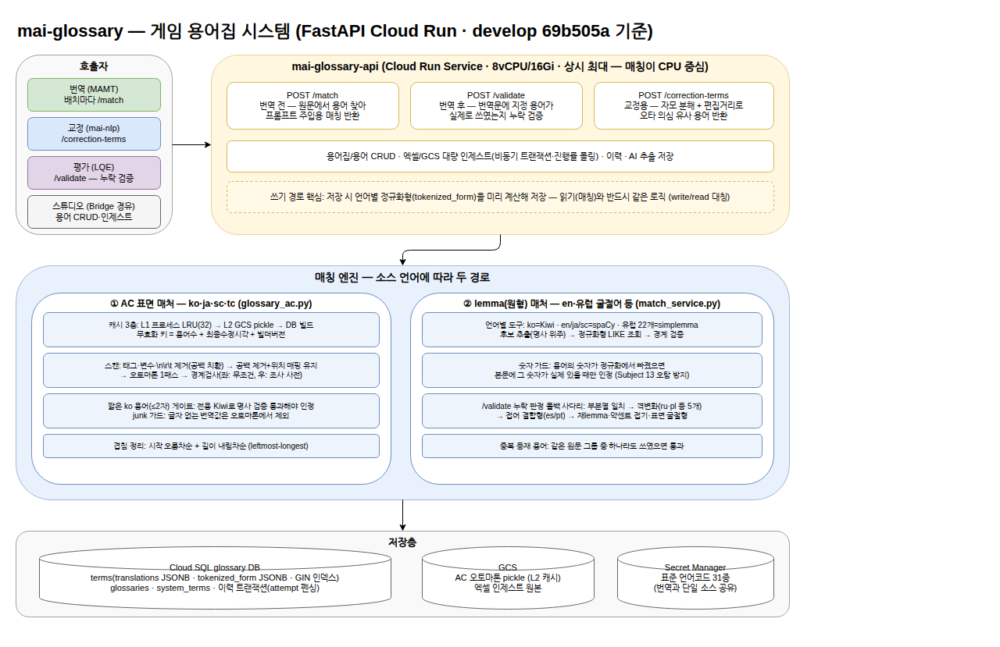

게임 로컬라이제이션 AI 플랫폼
MarbleAI 언어 파트 리딩
MarbleAI는 게임 로컬라이제이션을 위한 사내 AI 플랫폼으로, 음성과 언어 두 파트로 이뤄져 있습니다. 저는 그중 언어 파트를 리딩합니다.
게임을 전 세계에 동시 출시하려면 수만 문장을 최대 31개 언어로 옮겨야 합니다. 사람이 전부 감당할 수 없는 일정과 비용이라 주요 언어를 뺀 나머지는 LLM 기반 기계번역(MT)이 맡고 있습니다. — 최근에는 주요 언어까지 기계번역으로 넘기려는 시도가 늘고 있습니다.
1세대 언어 파트는 기계번역 한 단계에 머물러 있었습니다. 저는 리드로서 전면 재설계를 결정하고 교정·기계번역·용어집·평가 4개 시스템 체제로의 전환을 이끌었으며, 그중 기계번역·용어집·평가는 직접 구현해 지금까지 운영·개선하고 있습니다.
Problem1세대 언어 파트는 무엇이 문제였나
- 01확장성1세대 언어 파트는 서버 한 대에 시스템이 전부 얹혀 있어 확장성이 없었고, 기계번역 분량과 무관하게 하나의 큐를 순서대로 지나서, 몇 문장짜리도 대량 작업 뒤에서 기다렸습니다.
- 02배포배포 자동화가 없어 빌드부터 서버 반영까지 사람이 직접 했습니다. 컨테이너를 통째로 내렸다 올려서 진행 중인 기계번역이 없는 때를 골라야 했습니다.
- 03운영비용체계화된 모니터링이 없어 기계번역에 문제가 생겼을 때 정확한 진단이 어려웠습니다. 사소한 수정 하나에도 사람이 직접 문제 지점을 찾아 유지보수해야 했고, 이 일이 한 달에 몇 번씩 반복됐습니다.
- 04용어집용어는 엑셀, 매칭 엔진은 기계번역 이미지 안에 있었습니다. 요청마다 엑셀을 다시 읽어 검색 구조를 새로 빌드했고, 매칭을 고치려면 기계번역을 통째로 재배포해야 했습니다.
- 05품질 검증기계번역 품질 확인이 외부 업체 검수라 한 번에 2주~한 달, 비용 때문에 분기 1회가 한계였습니다. 모델을 바꿔도 다음 분기에야 결과를 알 수 있어 빨라지는 LLM 흐름을 따라갈 수 없었습니다.
고쳐야 하는 규모가 너무 방대하다고 판단하여 전면 재설계를 결정했습니다.
Analyze어떻게 판단했나
다섯 문제는 두 종류였습니다. 01확장성02배포03운영비용는 실행 기반의 문제였습니다. 서버를 늘려도 격리와 대기는 그대로고 배포도 달라지지 않으니, 무엇을 얹을지가 아니라 어디에 얹을지를 바꿔야 했습니다.
04용어집05품질 검증은 범위의 문제였습니다. 기계번역만 자동화된 시스템에서는 품질 검증과 용어 통일이 갈 곳이 없어 사람과 외주에 남습니다. 도구를 고쳐서 될 일이 아니라, 시스템이 덮는 범위를 넓혀야 했습니다.
실행 기반 — 관리형 워크플로 엔진과 쿠버네티스를 검토한 뒤 Cloud Run을 택했습니다. 워크플로 엔진을 유지하는 안은 정기 워크플로가 하나도 없는 우리 사용 형태와 맞지 않았고(부하도 요청 빈도가 아니라 한 건의 크기로 왔습니다), 쿠버네티스는 전담 관리 인력이 필요했습니다. 기준은 성능이 아니라 운영 인력이었습니다.
범위 — 기계번역 한 단계에서 현지화 전 과정(교정 → 번역 → 용어집 → 평가)으로 넓히기로 했습니다. 용어집은 기계번역 코드에서 떼어내 세 시스템이 함께 쓰는 독립 서비스로, 품질 검증은 외주가 아니라 시스템 안에서 돌게 만들기로 했습니다.
작은 팀에 지속 가능한 건 "잘 튜닝된 인프라"가 아니라 "튜닝할 게 없는 인프라"라고 판단했습니다.
Apply무엇을 만들었나
번역 하나였던 시스템을 넷으로 늘리는 그림을 그리고 팀과 나눠 만들었습니다. 기계번역 파이프라인·용어집 엔진·자동 품질 채점은 제가 처음부터 새로 작성했고, 원본 교정(오류가 전 언어로 증폭되기 전에 차단)은 제가 리딩하고 팀원이 구현했습니다.
시스템 전체의 플로우와 아키텍처는 제가 통일했습니다 — 누가 만들었든 모든 시스템이 같은 구조(접수 서버 → 큐 → 작은 건 즉시 처리·큰 건 배치)로 도는 이유입니다.
모든 갈림길에서 무엇을 포기할지 제가 정했습니다. 대표적으로 세 가지:
- 자동 재시도를 없앴습니다. 실패 복구보다 LLM 중복 호출의 부작용이 더 크다고 판단했습니다.
- 교정엔 사람의 확정 단계를 남겼습니다. 자동화율보다 게임 텍스트의 품질 책임이 먼저입니다.
- 채점은 기계번역과 다른 모델에 맡겼습니다. 자기가 한 번역을 자기가 채점하는 편향을 구조로 차단했습니다.
Result무엇이 달라졌나
- 품질 검수가 한 달짜리 외주에서 자동 채점이 됐습니다 — 번역량이 늘어도 검증 기간과 비용이 따라 늘지 않습니다.
- 출시 직전에도 작업 소실 없이 배포하고, 문제가 생기면 바로 되돌립니다.
- 모든 작업의 상태와 품질이 하나의 기록으로 조회됩니다.
- 요청을 실측해 보니 다수가 소형(문서 번역의 60%가 100문장 미만)이라 전용 즉시 처리 경로를 분리했습니다 — 작은 번역 대기가 약 5분에서 36초로 줄었습니다.
만들고 끝이 아니라, 운영하며 병목을 측정해 계속 고쳤습니다 — 무거운 계산을 분리해 대형 작업을 62분에서 26분으로 줄인 것도 그 기록 중 하나입니다.
Deep Dive더 깊이 볼 사람을 위해 — 한 일 전체
아래는 위 이야기를 이루는 실제 작업들입니다. 섹션마다 제 역할(직접 구현 / 리딩)을 밝혔습니다.
인프라 — 파이프라인 전면 재설계직접 구현
- 단일 서버 체제를 Cloud Run 리소스 7개 체제(접수 서버·워커·배치 잡·임베딩 잡·실시간 경로 + 평가 2종 신설)로 전환 — 전부 단일 이미지에서 시작 명령만 바꿔 띄워 관리 비용 최소화.
- 요청 크기 기반 자동 라우팅: 접수 서버가 분량을 추정해 즉시 처리/배치를 5단계로 판정(강제 스위치 → 분량 추정 → 크기 임계값 → 전처리 캐시 확인 → 워커 여유). 추정이 실패하면 항상 안전한 쪽(배치)으로. 경로를 나눈 근거는 수요 실측 — 문서 번역 요청의 60%가 100문장 미만.
- 컴포넌트 간 직접 호출 없이 전 구간 큐(Cloud Tasks) 경유 — 동시성 제어와 백프레셔를 큐에 위임.
- 이 구조를 교정 시스템에도 동일하게 적용하도록 아키텍처를 통일 — 시스템이 늘어도 운영의 멘탈 모델은 하나로 유지.
- 배포 체계: 커밋 단위 태그, 무중단 리비전 전환, 문제 시 이전 버전 즉시 복구. 개발/검증/운영 3환경 분리.
- 재시도 정책을 시스템별로 다르게 설계: 기계번역·평가는 재시도 0회(LLM 중복 호출 부작용이 더 큼), 교정만 멱등성을 갖춰 재시도 허용.
- 게임 참조 데이터(MTF) 전처리 결과를 내용 해시 키로 캐싱, DB 잠금으로 동시 생성 방지 — 같은 파일은 한 번만 굽는다.
- 대형 작업은 배치×언어 쌍 단위로 쪼개 샤드 병렬 처리 — 작업 크기에 따라 샤드 수를 자동 산정(상한 10), 1세대에서 시간 단위였을 규모를 분 단위로.
- 무거운 임베딩 계산을 전담 배치 잡으로 분리해 대형 작업 62분→26분. 완료 여부는 파일 마커가 아니라 DB의 내용 해시로 판정(캐시가 있어도 벡터가 낡았으면 다시 만든다).
- 연산 라이브러리를 CPU 전용으로 바꿔 배포 이미지 3.81→1.44GB — 서버 기동 시간 단축.
번역 품질 — 게임 텍스트가 깨지지 않게 하는 장치들직접 구현
- 프롬프트 체계 설계: 게임 시트용과 일반 문서용 프롬프트를 분리 설계하고, 용어집·유사 문장 예시·캐릭터 말투·태그 규칙이 배치마다 조립되는 구조로 재작성. 내용 없는 섹션은 자동 생략.
- 태그 파이프라인: 텍스트 속 코드 조각을 3종(치환/보존/번역 대상)으로 분류. 같은 패턴이 게임마다 의미가 달라서, 게임 데이터별로 태그 규칙을 LLM이 생성하고 코드로 검증해 적용.
- 무결성 검사 사다리: 번역 직후 태그 개수·보존 변수·용어 누락을 결정론적으로 검사 → 문제 있는 문장만 단계적 재번역(토큰 교정 ≤2회 → 내용 교정 1회 → 제약 재번역 1회) → 그래도 안 되면 결함이 가장 적은 후보를 채택. 고친 결과의 채택 여부는 LLM이 아니라 코드가 판정.
- 언어쌍별 모델 라우팅: 87개 언어 조합마다 최적 모델을 설정으로 관리, 장애 시 폴백 모델로 자동 전환(쌍 단위, 시간 제한부).
- LLM 백엔드 3종 운영: Gemini·Claude(Vertex) + AWS Bedrock — 서명 방식(SigV4)까지 직접 구현.
- 맥락 주입: 유사 문장 벡터 검색(few-shot), 대화 장면은 화자 매칭으로 앞뒤 대사를 함께 제공, 캐릭터별 말투(페르소나) 자동 구축.
- 번역 소스 언어를 한국어 1종에서 6종(en/ko/ja/중국어 간·번체/th)으로 확장.
원본 교정 — 번역 전에 소스를 고치는 시스템 (신설)리딩 — 구현은 팀원
- 한국어 원본의 오탈자·잘못된 용어가 번역되면 모든 언어로 증폭되는 문제를 앞단에서 차단.
- LLM 3단계 호출: 탐지(의심되면 일단 표시) → 교정(최소 변경 원칙) → 리뷰(과교정 되돌리기 + 오류 유형 분류).
- 숫자가 든 변경은 통째로 거부 — 수치를 잘못 고치면 게임 데이터가 깨지므로, 교정률보다 데이터 보호가 우선.
- 최종 채택은 사람이 문장별로 확정하는 단계(REVISING)를 의도적으로 유지 — 자동화율보다 품질 책임.
- 128문장 단위 병렬 분산 처리 + 멱등 설계(같은 배치가 두 번 와도 안전, 완료 판정은 원자적 DB 전이) + 비용 상한 차단기.
자동 품질 채점(LQE) — 한 달짜리 외주 검수를 대체 (신설)직접 구현
- 태그 훼손·미번역·숫자 불일치 등 확정 오류 5종은 규칙이 LLM 없이 판정 — 재현 가능하고 싸게.
- 오역·누락·문법 등은 LLM 심판이 원문과 5문장 단위로 대조 — 넓게 탐지한 뒤 재분류로 거르는 2단 구조.
- 심판의 판정도 그대로 믿지 않음: 문제 삼은 용어가 실제로는 지정 표기를 쓰고 있으면 주장을 기각(용어집이 권위), 근거 없는 일관성 지적도 기각.
- 파일 전체를 훑는 용어 일관성 검사 — 같은 용어가 문서 안에서 다르게 번역된 곳을 찾아 확인.
- 감점은 번역 품질 국제 표준(MQM) 기반 13개 항목, 분량 보정 + 중복 감점 억제. 합격선 근처 점수는 2~3회 재채점해 요동 방지.
- 채점 모델은 번역 모델과 다른 계열 — 자기 채점 편향의 구조적 차단.
- 전체를 API 서비스로 제공: 완료된 번역 건을 접수하면 자동으로 채점 리포트 생성.
용어집 엔진 — 수만 개 용어를 전 언어에서 일관되게직접 구현
- 언어 특성에 따라 두 매칭 경로: 한국어·일본어·중국어는 문자열 다중 검색(Aho-Corasick) 표면 매칭, 영어·유럽 굴절어는 단어 원형(lemma) 매칭.
- 표면 매칭은 3층 캐시(프로세스 메모리 → 클라우드 저장소 → DB 빌드)로 수만 용어를 1패스 스캔. 용어가 바뀌면 캐시가 자동 무효화.
- 오탐을 막는 장치들: 단어 경계 검사(한국어 조사 51종 사전), 짧은 용어는 형태소 분석기로 명사인지 검증(캐릭터명 "두"가 "두둑한"에 매칭되던 사고의 해법), 글자 없는 번역값 제외.
- 저장과 조회의 정규화를 대칭으로 유지 — 용어를 저장할 때 언어별 정규화형을 미리 계산해두고, 매칭 때 같은 로직으로 비교. 이 대칭이 깨지면 매칭이 통째로 실패한다.
- 번역 검증(/validate)의 오탐 26.8만 건 수리: 굴절형·접어 결합형·악센트·대소문자 코드 등 6갈래 폴백을 실측 기반으로 보강. 미번역이 만점 받던 구멍도 함께 수리.
- 교정용 유사 용어 검색: 한글 자모 분해 + 편집거리(C 구현)로 오타 의심 용어를 문장별 제공.
- 대량 등록 최적화: 언어 그룹 병렬 처리로 6만 행 등록 932초→약 130초.
사용성 — 쓰는 사람의 마찰 제거직접 구현
- 엑셀 형식 자동 인식(zero-config): 사용자가 매번 지정하던 "어느 열이 어느 언어인지"를 룰 스캔 + LLM 보강으로 자동화. 잘못 인식하는 게 더 위험하므로 인식 결과를 코드로 4단계 검증한 뒤에만 채택 — "오탐보다 미인식이 싸다".
- 문서 번역 지원: 엑셀 외에 docx·pptx·마크다운 파서를 갖추고, 이미 번역된 부분은 건드리지 않고 서식을 보존한 채 결과를 되써넣는 방식으로 처리.
- 실시간 경량 번역(quick): 짧은 텍스트 전용 동기 경로 신설 — 태그 마스킹 → LLM 1회 → 복원, 1,159자 5초. 용어집 조회가 5초를 넘으면 건너뛰고 진행(응답성 우선).
- 다수 파일 일괄 번역, 문서 톤 옵션, 언어 감지 API 등 플랫폼 기능 확장 — 백엔드 팀과 계약(콜백 규격·타임아웃) 협의 포함.
- 플랫폼 기능을 AI 어시스턴트(Claude)의 확장 기능으로 감싸 배포 — 타 부서가 사이트 접속 없이 대화창에서 바로 번역 호출. AI 이해도가 낮은 부서일수록 도입 마찰이 큰데, 그 접점 자체를 제거.
운영 — 만들고 끝이 아니라 계속 측정하고 고침직접 구현
- 작업 단위 공유 원장: 4개 시스템이 같은 작업 ID로 하나의 DB에 상태·이력을 남김 — 어떤 번역이 언제 어떤 품질로 나갔는지 한 곳에서 조회. 시스템을 4개로 쪼갠 결정이 관측 비용을 4배로 만들지 않도록, 분리와 동시에 설계.
- 실행 전 구간 통합 로그 + LLM 사용량·비용을 작업 단위로 집계.
- 실패한 작업의 원인을 통합 로그에서 자동으로 짚어주는 진단 도구를 만들어 팀 운영 부담 축소.
- 모든 개선은 전/후 실측을 남기고 적용 — 비교 실험(A/B), 운영 데이터 검증. 본문의 숫자(62분→26분)가 그 기록.
아키텍처 도면 (직접 작도)
본문은 쉬운 말로 풀었지만, 도면은 실제 시스템 명칭 그대로입니다.

